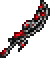
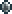

Кровавый мясорез
Характеристики
Тип Оружие Меч
Урон 22

Скорость 25 (Быстрая)
Атак/сек 2.4
Крит. шанс 4%
Отбрасывание 5 (Среднее)
Редкость Синяя
Продажа 27 
Лучшая модификация Легендарный
Кол-во исследований 1 исследование
Кровавый мясорез (Blood Butcherer) — меч, добавленный в версии 1.2. Он является кримзоновой версией гибели света. При атаке испускает красные частицы, как и всё остальное оружие ближнего боя из кримтана. С версии 1.4.4 пораженные этим мечом враги кровоточят некоторое время, получая 3-5 урона каждую секунду.